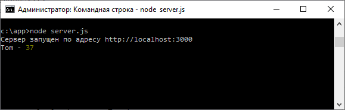

Получение данных от клиента стр.2
Перебор асинхронного итератора request Второй способ представляет перебор объекта request, который также предоставляет асинхронный итератор для получаемых данных:
http.createServer(async
(request, response) => {
if (request.url
=== "/user") {
const buffers = []; // буфер для получаемых
данных
for
await (const chunk of request) {
buffers.push(chunk); // добавляем в буфер все полученные данные
}
const data = Buffer.concat(buffers).toString();
console.log(data);
response.end("Данные успешно получены");
}
else{
fs.readFile("index.html",
(error, data) =>
response.end(data));
}
}).listen(3000, ()=>console.log("Сервер запущен по адресу
http://localhost:3000"));
Здесь вначале определяем буфер для добавляемых данных: const buffers = [];
Далее перебираем объект request, получая из него
данные и добавляя их в буфер buffers: for await (const chunk of request) {
buffers.push(chunk);
}
При этом мы неограничены получением только текстовых данных. Например, получим данные в формате json:
const
http = require("http");
const fs = require("fs");
http.createServer(async (request, response) => {
if (request.url === "/user") {
const buffers = []; // буфер для получаемых данных
for
await (const chunk of request) {
buffers.push(chunk); // добавляем в буфер все полученные данные
}
const user = JSON.parse(Buffer.concat(buffers).toString());
console.log(user.name,"-", user.age);
response.end("Данные успешно получены");
}
else{
fs.readFile("index.html", (error, data) => response.end(data));
}
}).listen(3000, ()=>console.log("Сервер запущен по адресу
http://localhost:3000"));
Здесь предолагается, что клиент посылает серверу объект в формате JSON, у которого есть свойства name и age. И с помощью функции JSON.parse() мы можем расарсить полученные данные в формат json. Код клиента для текстирования мог бы выглядеть следующим образом:
sendUser();
async
function sendUser(user) {
const
response = await fetch("/user", {
method: "POST",
headers: { "Content-Type": "application/json" },
body: JSON.stringify({
name: "Tom",
age: 37
})
});
const responseText = await response.text();
console.log(responseText);
}
В этом случае вывод сервера будет выглядеть следующим образом:

Назад: Получение данных от клиента стр 1. | Далее: Начало работы с Epxress
fs
os
mkdir
statusCode
setHeader
end